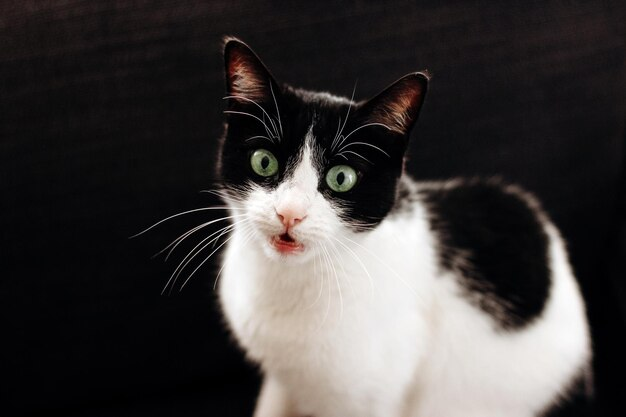

-

Rojelio
Rojelio es un macho muy manso y tranquilo perfecto si queires ver series en el sofa
-

Copito
Copito es una gata joven y enerjica, esta todo el dia de un lado para otro
-

Carbon
Una hembra curiosa e intrepida que no le asusta nada
-

Garfield
Garfied tiene es nombre en referencia a un dibujo animado ya que es un vago natural